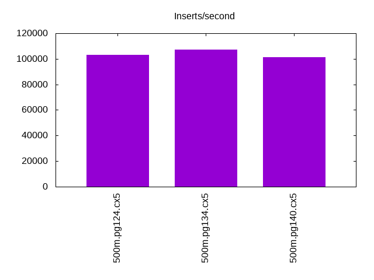
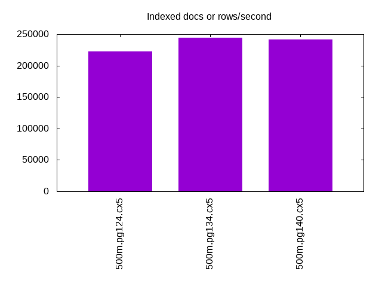
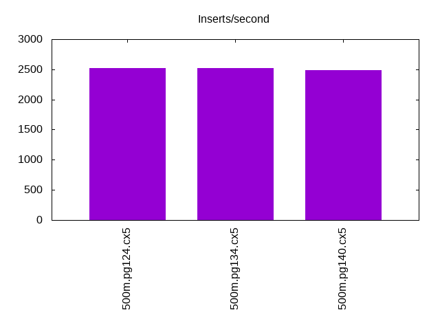
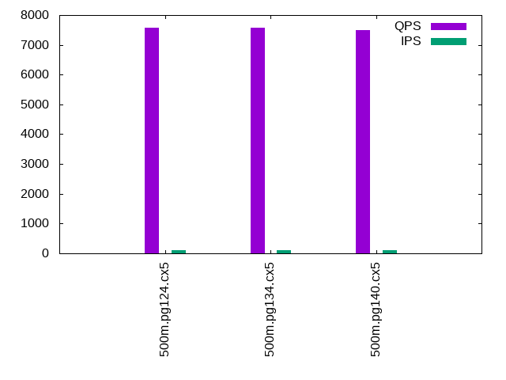
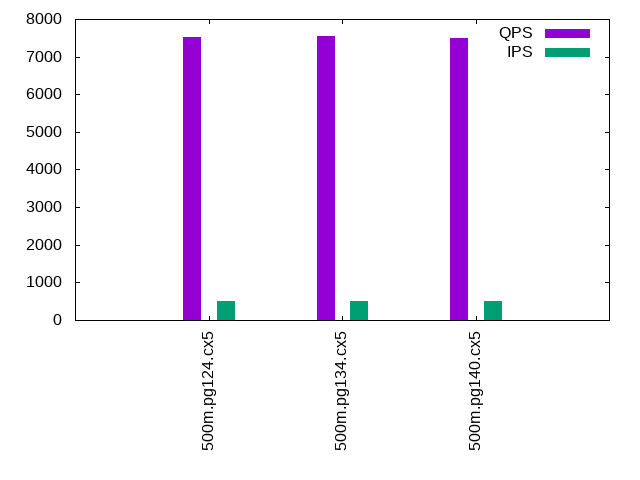
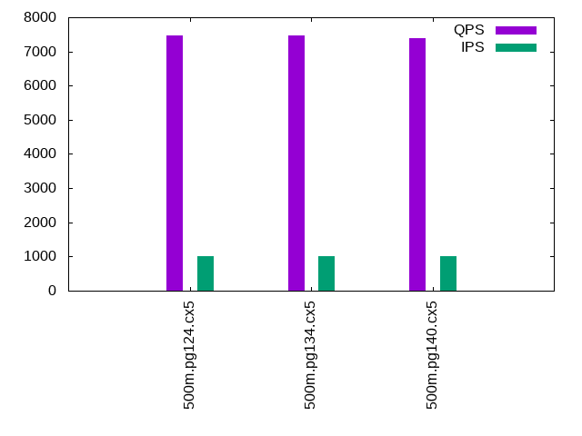

This is a report for the insert benchmark with 500M docs and 1 client(s). It is generated by scripts (bash, awk, sed) and Tufte might not be impressed. An overview of the insert benchmark is here and a short update is here. Below, by DBMS, I mean DBMS+version.config. An example is my8020.c10b40 where my means MySQL, 8020 is version 8.0.20 and c10b40 is the name for the configuration file.
The test server is an Intel NUC with 4 cores, 16G RAM and a Samsung 970 EVO. More details are here. Clients and the DBMS share one server. The per-database configs are in the per-database subdirectories here.
The tested DBMS are:
The numbers are inserts/s for l.i0 and l.i1, indexed docs (or rows) /s for l.x and queries/s for q*.2. The values are the average rate over the entire test for inserts (IPS) and queries (QPS). The range of values for IPS and QPS is split into 3 parts: bottom 25%, middle 50%, top 25%. Values in the bottom 25% have a red background, values in the top 25% have a green background and values in the middle have no color. A gray background is used for values that can be ignored because the DBMS did not sustain the target insert rate. Red backgrounds are not used when the minimum value is within 80% of the max value.
| dbms | l.i0 | l.x | l.i1 | q100.1 | q500.1 | q1000.1 |
|---|---|---|---|---|---|---|
| 500m.pg124.cx5 | 103072 | 222762 | 2523 | 7567 | 7522 | 7468 |
| 500m.pg134.cx5 | 107158 | 244428 | 2526 | 7572 | 7538 | 7472 |
| 500m.pg140.cx5 | 101174 | 241828 | 2492 | 7502 | 7495 | 7381 |
This lists the average rate of inserts/s for the tests that do inserts concurrent with queries. For such tests the query rate is listed in the table above. The read+write tests are setup so that the insert rate should match the target rate every second. Cells that are not at least 95% of the target have a red background to indicate a failure to satisfy the target.
| dbms | q100.1 | q500.1 | q1000.1 |
|---|---|---|---|
| pg124.cx5 | 100 | 500 | 999 |
| pg134.cx5 | 100 | 499 | 999 |
| pg140.cx5 | 100 | 500 | 999 |
| target | 100 | 500 | 1000 |
l.i0: load without secondary indexes. Graphs for performance per 1-second interval are here.
Average throughput:
Insert response time histogram: each cell has the percentage of responses that take <= the time in the header and max is the max response time in seconds. For the max column values in the top 25% of the range have a red background and in the bottom 25% of the range have a green background. The red background is not used when the min value is within 80% of the max value.
| dbms | 256us | 1ms | 4ms | 16ms | 64ms | 256ms | 1s | 4s | 16s | gt | max |
|---|---|---|---|---|---|---|---|---|---|---|---|
| pg124.cx5 | 93.617 | 6.381 | 0.001 | 0.001 | nonzero | 0.068 | |||||
| pg134.cx5 | 96.927 | 3.069 | 0.003 | 0.001 | nonzero | 0.200 | |||||
| pg140.cx5 | 86.091 | 13.906 | 0.002 | 0.001 | nonzero | nonzero | 0.276 |
Performance metrics for the DBMS listed above. Some are normalized by throughput, others are not. Legend for results is here.
ips qps rps rmbps wps wmbps rpq rkbpq wpi wkbpi csps cpups cspq cpupq dbgb1 dbgb2 rss maxop p50 p99 tag 103072 0 44 0.3 196.9 39.7 0.000 0.003 0.002 0.394 12341 42.4 0.120 16 47.8 55.8 0.0 0.068 103188 98695 500m.pg124.cx5 107158 0 38 0.3 160.9 51.3 0.000 0.003 0.002 0.490 12913 43.7 0.121 16 47.8 62.9 0.0 0.200 107781 96994 500m.pg134.cx5 101174 0 41 0.3 143.9 47.3 0.000 0.003 0.001 0.479 12159 43.1 0.120 17 47.8 62.8 0.0 0.276 101587 95796 500m.pg140.cx5
l.x: create secondary indexes.
Average throughput:
Performance metrics for the DBMS listed above. Some are normalized by throughput, others are not. Legend for results is here.
ips qps rps rmbps wps wmbps rpq rkbpq wpi wkbpi csps cpups cspq cpupq dbgb1 dbgb2 rss maxop p50 p99 tag 222762 0 574 69.7 476.8 103.0 0.003 0.320 0.002 0.474 933 22.8 0.004 4 91.9 111.6 0.0 0.003 NA NA 500m.pg124.cx5 244428 0 598 74.4 202.5 78.2 0.002 0.312 0.001 0.328 536 23.2 0.002 4 91.9 106.4 0.0 0.006 NA NA 500m.pg134.cx5 241828 0 593 73.4 194.4 75.5 0.002 0.311 0.001 0.320 543 23.2 0.002 4 91.9 108.1 0.0 0.007 NA NA 500m.pg140.cx5
l.i1: continue load after secondary indexes created. Graphs for performance per 1-second interval are here.
Average throughput:
Insert response time histogram: each cell has the percentage of responses that take <= the time in the header and max is the max response time in seconds. For the max column values in the top 25% of the range have a red background and in the bottom 25% of the range have a green background. The red background is not used when the min value is within 80% of the max value.
| dbms | 256us | 1ms | 4ms | 16ms | 64ms | 256ms | 1s | 4s | 16s | gt | max |
|---|---|---|---|---|---|---|---|---|---|---|---|
| pg124.cx5 | 29.200 | 70.749 | 0.051 | 0.175 | |||||||
| pg134.cx5 | 31.620 | 68.309 | 0.071 | 0.142 | |||||||
| pg140.cx5 | 27.828 | 72.072 | 0.100 | 0.160 |
Performance metrics for the DBMS listed above. Some are normalized by throughput, others are not. Legend for results is here.
ips qps rps rmbps wps wmbps rpq rkbpq wpi wkbpi csps cpups cspq cpupq dbgb1 dbgb2 rss maxop p50 p99 tag 2523 0 3374 27.0 4248.7 67.2 1.337 10.966 1.684 27.281 7846 22.6 3.110 358 93.6 111.0 0.0 0.175 2597 1498 500m.pg124.cx5 2526 0 3410 27.3 4289.6 68.3 1.350 11.064 1.698 27.681 7971 22.6 3.155 358 93.6 111.0 0.0 0.142 2597 1498 500m.pg134.cx5 2492 0 3350 26.8 4222.2 66.5 1.344 11.026 1.694 27.319 7703 21.0 3.091 337 93.6 112.5 0.0 0.160 2497 1398 500m.pg140.cx5
q100.1: range queries with 100 insert/s per client. Graphs for performance per 1-second interval are here.
Average throughput:
Query response time histogram: each cell has the percentage of responses that take <= the time in the header and max is the max response time in seconds. For max values in the top 25% of the range have a red background and in the bottom 25% of the range have a green background. The red background is not used when the min value is within 80% of the max value.
| dbms | 256us | 1ms | 4ms | 16ms | 64ms | 256ms | 1s | 4s | 16s | gt | max |
|---|---|---|---|---|---|---|---|---|---|---|---|
| pg124.cx5 | 99.905 | 0.094 | 0.001 | nonzero | 0.014 | ||||||
| pg134.cx5 | 99.869 | 0.128 | 0.003 | nonzero | nonzero | 0.040 | |||||
| pg140.cx5 | 99.805 | 0.190 | 0.003 | 0.001 | nonzero | nonzero | 0.067 |
Insert response time histogram: each cell has the percentage of responses that take <= the time in the header and max is the max response time in seconds. For max values in the top 25% of the range have a red background and in the bottom 25% of the range have a green background. The red background is not used when the min value is within 80% of the max value.
| dbms | 256us | 1ms | 4ms | 16ms | 64ms | 256ms | 1s | 4s | 16s | gt | max |
|---|---|---|---|---|---|---|---|---|---|---|---|
| pg124.cx5 | 86.424 | 13.576 | 0.029 | ||||||||
| pg134.cx5 | 85.667 | 14.326 | 0.007 | 0.365 | |||||||
| pg140.cx5 | 96.625 | 3.375 | 0.040 |
Performance metrics for the DBMS listed above. Some are normalized by throughput, others are not. Legend for results is here.
ips qps rps rmbps wps wmbps rpq rkbpq wpi wkbpi csps cpups cspq cpupq dbgb1 dbgb2 rss maxop p50 p99 tag 100 7567 135 1.1 270.9 4.2 0.018 0.146 2.712 43.050 29452 27.8 3.892 147 93.7 96.2 0.0 0.014 7579 7067 500m.pg124.cx5 100 7572 137 1.1 277.6 4.3 0.018 0.148 2.782 44.285 29472 27.8 3.892 147 93.7 97.0 0.0 0.040 7594 6872 500m.pg134.cx5 100 7502 136 1.1 328.7 4.7 0.018 0.149 3.294 48.651 29134 26.4 3.884 141 93.7 99.3 0.0 0.067 7544 6345 500m.pg140.cx5
q500.1: range queries with 500 insert/s per client. Graphs for performance per 1-second interval are here.
Average throughput:
Query response time histogram: each cell has the percentage of responses that take <= the time in the header and max is the max response time in seconds. For max values in the top 25% of the range have a red background and in the bottom 25% of the range have a green background. The red background is not used when the min value is within 80% of the max value.
| dbms | 256us | 1ms | 4ms | 16ms | 64ms | 256ms | 1s | 4s | 16s | gt | max |
|---|---|---|---|---|---|---|---|---|---|---|---|
| pg124.cx5 | 99.911 | 0.087 | 0.002 | nonzero | 0.008 | ||||||
| pg134.cx5 | 99.910 | 0.089 | 0.002 | nonzero | nonzero | 0.017 | |||||
| pg140.cx5 | 99.874 | 0.124 | 0.002 | nonzero | 0.006 |
Insert response time histogram: each cell has the percentage of responses that take <= the time in the header and max is the max response time in seconds. For max values in the top 25% of the range have a red background and in the bottom 25% of the range have a green background. The red background is not used when the min value is within 80% of the max value.
| dbms | 256us | 1ms | 4ms | 16ms | 64ms | 256ms | 1s | 4s | 16s | gt | max |
|---|---|---|---|---|---|---|---|---|---|---|---|
| pg124.cx5 | 97.160 | 2.837 | 0.003 | 0.096 | |||||||
| pg134.cx5 | 97.100 | 2.897 | 0.003 | 0.095 | |||||||
| pg140.cx5 | 95.006 | 4.994 | 0.062 |
Performance metrics for the DBMS listed above. Some are normalized by throughput, others are not. Legend for results is here.
ips qps rps rmbps wps wmbps rpq rkbpq wpi wkbpi csps cpups cspq cpupq dbgb1 dbgb2 rss maxop p50 p99 tag 500 7522 658 5.2 1057.8 18.4 0.087 0.710 2.118 37.779 30403 28.3 4.042 150 94.6 98.7 0.0 0.008 7528 7400 500m.pg124.cx5 499 7538 658 5.2 1066.3 18.5 0.087 0.709 2.135 37.875 30525 28.3 4.049 150 94.6 98.8 0.0 0.017 7544 7400 500m.pg134.cx5 500 7495 658 5.2 1020.9 17.9 0.088 0.715 2.044 36.669 30233 27.3 4.034 146 94.6 99.7 0.0 0.006 7496 7368 500m.pg140.cx5
q1000.1: range queries with 1000 insert/s per client. Graphs for performance per 1-second interval are here.
Average throughput:
Query response time histogram: each cell has the percentage of responses that take <= the time in the header and max is the max response time in seconds. For max values in the top 25% of the range have a red background and in the bottom 25% of the range have a green background. The red background is not used when the min value is within 80% of the max value.
| dbms | 256us | 1ms | 4ms | 16ms | 64ms | 256ms | 1s | 4s | 16s | gt | max |
|---|---|---|---|---|---|---|---|---|---|---|---|
| pg124.cx5 | 99.825 | 0.172 | 0.003 | nonzero | 0.015 | ||||||
| pg134.cx5 | 99.834 | 0.163 | 0.003 | nonzero | 0.013 | ||||||
| pg140.cx5 | 99.750 | 0.247 | 0.003 | nonzero | 0.007 |
Insert response time histogram: each cell has the percentage of responses that take <= the time in the header and max is the max response time in seconds. For max values in the top 25% of the range have a red background and in the bottom 25% of the range have a green background. The red background is not used when the min value is within 80% of the max value.
| dbms | 256us | 1ms | 4ms | 16ms | 64ms | 256ms | 1s | 4s | 16s | gt | max |
|---|---|---|---|---|---|---|---|---|---|---|---|
| pg124.cx5 | 94.510 | 5.483 | 0.007 | 0.103 | |||||||
| pg134.cx5 | 94.006 | 5.987 | 0.006 | 0.083 | |||||||
| pg140.cx5 | 88.288 | 11.697 | 0.015 | 0.246 |
Performance metrics for the DBMS listed above. Some are normalized by throughput, others are not. Legend for results is here.
ips qps rps rmbps wps wmbps rpq rkbpq wpi wkbpi csps cpups cspq cpupq dbgb1 dbgb2 rss maxop p50 p99 tag 999 7468 1291 10.3 1695.7 32.3 0.173 1.411 1.697 33.123 31581 29.2 4.229 156 95.5 102.8 0.0 0.015 7480 7320 500m.pg124.cx5 999 7472 1294 10.3 1693.7 32.3 0.173 1.413 1.695 33.104 31753 29.2 4.250 156 95.5 102.8 0.0 0.013 7480 7320 500m.pg134.cx5 999 7381 1294 10.3 1735.4 31.6 0.175 1.435 1.737 32.341 31234 28.5 4.232 154 95.5 104.5 0.0 0.007 7384 7208 500m.pg140.cx5
l.i0: load without secondary indexes
Performance metrics for all DBMS, not just the ones listed above. Some are normalized by throughput, others are not. Legend for results is here.
ips qps rps rmbps wps wmbps rpq rkbpq wpi wkbpi csps cpups cspq cpupq dbgb1 dbgb2 rss maxop p50 p99 tag 103072 0 44 0.3 196.9 39.7 0.000 0.003 0.002 0.394 12341 42.4 0.120 16 47.8 55.8 0.0 0.068 103188 98695 500m.pg124.cx5 107158 0 38 0.3 160.9 51.3 0.000 0.003 0.002 0.490 12913 43.7 0.121 16 47.8 62.9 0.0 0.200 107781 96994 500m.pg134.cx5 101174 0 41 0.3 143.9 47.3 0.000 0.003 0.001 0.479 12159 43.1 0.120 17 47.8 62.8 0.0 0.276 101587 95796 500m.pg140.cx5
l.x: create secondary indexes
Performance metrics for all DBMS, not just the ones listed above. Some are normalized by throughput, others are not. Legend for results is here.
ips qps rps rmbps wps wmbps rpq rkbpq wpi wkbpi csps cpups cspq cpupq dbgb1 dbgb2 rss maxop p50 p99 tag 222762 0 574 69.7 476.8 103.0 0.003 0.320 0.002 0.474 933 22.8 0.004 4 91.9 111.6 0.0 0.003 NA NA 500m.pg124.cx5 244428 0 598 74.4 202.5 78.2 0.002 0.312 0.001 0.328 536 23.2 0.002 4 91.9 106.4 0.0 0.006 NA NA 500m.pg134.cx5 241828 0 593 73.4 194.4 75.5 0.002 0.311 0.001 0.320 543 23.2 0.002 4 91.9 108.1 0.0 0.007 NA NA 500m.pg140.cx5
l.i1: continue load after secondary indexes created
Performance metrics for all DBMS, not just the ones listed above. Some are normalized by throughput, others are not. Legend for results is here.
ips qps rps rmbps wps wmbps rpq rkbpq wpi wkbpi csps cpups cspq cpupq dbgb1 dbgb2 rss maxop p50 p99 tag 2523 0 3374 27.0 4248.7 67.2 1.337 10.966 1.684 27.281 7846 22.6 3.110 358 93.6 111.0 0.0 0.175 2597 1498 500m.pg124.cx5 2526 0 3410 27.3 4289.6 68.3 1.350 11.064 1.698 27.681 7971 22.6 3.155 358 93.6 111.0 0.0 0.142 2597 1498 500m.pg134.cx5 2492 0 3350 26.8 4222.2 66.5 1.344 11.026 1.694 27.319 7703 21.0 3.091 337 93.6 112.5 0.0 0.160 2497 1398 500m.pg140.cx5
q100.1: range queries with 100 insert/s per client
Performance metrics for all DBMS, not just the ones listed above. Some are normalized by throughput, others are not. Legend for results is here.
ips qps rps rmbps wps wmbps rpq rkbpq wpi wkbpi csps cpups cspq cpupq dbgb1 dbgb2 rss maxop p50 p99 tag 100 7567 135 1.1 270.9 4.2 0.018 0.146 2.712 43.050 29452 27.8 3.892 147 93.7 96.2 0.0 0.014 7579 7067 500m.pg124.cx5 100 7572 137 1.1 277.6 4.3 0.018 0.148 2.782 44.285 29472 27.8 3.892 147 93.7 97.0 0.0 0.040 7594 6872 500m.pg134.cx5 100 7502 136 1.1 328.7 4.7 0.018 0.149 3.294 48.651 29134 26.4 3.884 141 93.7 99.3 0.0 0.067 7544 6345 500m.pg140.cx5
q500.1: range queries with 500 insert/s per client
Performance metrics for all DBMS, not just the ones listed above. Some are normalized by throughput, others are not. Legend for results is here.
ips qps rps rmbps wps wmbps rpq rkbpq wpi wkbpi csps cpups cspq cpupq dbgb1 dbgb2 rss maxop p50 p99 tag 500 7522 658 5.2 1057.8 18.4 0.087 0.710 2.118 37.779 30403 28.3 4.042 150 94.6 98.7 0.0 0.008 7528 7400 500m.pg124.cx5 499 7538 658 5.2 1066.3 18.5 0.087 0.709 2.135 37.875 30525 28.3 4.049 150 94.6 98.8 0.0 0.017 7544 7400 500m.pg134.cx5 500 7495 658 5.2 1020.9 17.9 0.088 0.715 2.044 36.669 30233 27.3 4.034 146 94.6 99.7 0.0 0.006 7496 7368 500m.pg140.cx5
q1000.1: range queries with 1000 insert/s per client
Performance metrics for all DBMS, not just the ones listed above. Some are normalized by throughput, others are not. Legend for results is here.
ips qps rps rmbps wps wmbps rpq rkbpq wpi wkbpi csps cpups cspq cpupq dbgb1 dbgb2 rss maxop p50 p99 tag 999 7468 1291 10.3 1695.7 32.3 0.173 1.411 1.697 33.123 31581 29.2 4.229 156 95.5 102.8 0.0 0.015 7480 7320 500m.pg124.cx5 999 7472 1294 10.3 1693.7 32.3 0.173 1.413 1.695 33.104 31753 29.2 4.250 156 95.5 102.8 0.0 0.013 7480 7320 500m.pg134.cx5 999 7381 1294 10.3 1735.4 31.6 0.175 1.435 1.737 32.341 31234 28.5 4.232 154 95.5 104.5 0.0 0.007 7384 7208 500m.pg140.cx5
Insert response time histogram
256us 1ms 4ms 16ms 64ms 256ms 1s 4s 16s gt max tag 0.000 93.617 6.381 0.001 0.001 nonzero 0.000 0.000 0.000 0.000 0.068 pg124.cx5 0.000 96.927 3.069 0.003 0.001 nonzero 0.000 0.000 0.000 0.000 0.200 pg134.cx5 0.000 86.091 13.906 0.002 0.001 nonzero nonzero 0.000 0.000 0.000 0.276 pg140.cx5
TODO - determine whether there is data for create index response time
Insert response time histogram
256us 1ms 4ms 16ms 64ms 256ms 1s 4s 16s gt max tag 0.000 0.000 0.000 29.200 70.749 0.051 0.000 0.000 0.000 0.000 0.175 pg124.cx5 0.000 0.000 0.000 31.620 68.309 0.071 0.000 0.000 0.000 0.000 0.142 pg134.cx5 0.000 0.000 0.000 27.828 72.072 0.100 0.000 0.000 0.000 0.000 0.160 pg140.cx5
Query response time histogram
256us 1ms 4ms 16ms 64ms 256ms 1s 4s 16s gt max tag 99.905 0.094 0.001 nonzero 0.000 0.000 0.000 0.000 0.000 0.000 0.014 pg124.cx5 99.869 0.128 0.003 nonzero nonzero 0.000 0.000 0.000 0.000 0.000 0.040 pg134.cx5 99.805 0.190 0.003 0.001 nonzero nonzero 0.000 0.000 0.000 0.000 0.067 pg140.cx5
Insert response time histogram
256us 1ms 4ms 16ms 64ms 256ms 1s 4s 16s gt max tag 0.000 0.000 0.000 86.424 13.576 0.000 0.000 0.000 0.000 0.000 0.029 pg124.cx5 0.000 0.000 0.000 85.667 14.326 0.000 0.007 0.000 0.000 0.000 0.365 pg134.cx5 0.000 0.000 0.000 96.625 3.375 0.000 0.000 0.000 0.000 0.000 0.040 pg140.cx5
Query response time histogram
256us 1ms 4ms 16ms 64ms 256ms 1s 4s 16s gt max tag 99.911 0.087 0.002 nonzero 0.000 0.000 0.000 0.000 0.000 0.000 0.008 pg124.cx5 99.910 0.089 0.002 nonzero nonzero 0.000 0.000 0.000 0.000 0.000 0.017 pg134.cx5 99.874 0.124 0.002 nonzero 0.000 0.000 0.000 0.000 0.000 0.000 0.006 pg140.cx5
Insert response time histogram
256us 1ms 4ms 16ms 64ms 256ms 1s 4s 16s gt max tag 0.000 0.000 0.000 97.160 2.837 0.003 0.000 0.000 0.000 0.000 0.096 pg124.cx5 0.000 0.000 0.000 97.100 2.897 0.003 0.000 0.000 0.000 0.000 0.095 pg134.cx5 0.000 0.000 0.000 95.006 4.994 0.000 0.000 0.000 0.000 0.000 0.062 pg140.cx5
Query response time histogram
256us 1ms 4ms 16ms 64ms 256ms 1s 4s 16s gt max tag 99.825 0.172 0.003 nonzero 0.000 0.000 0.000 0.000 0.000 0.000 0.015 pg124.cx5 99.834 0.163 0.003 nonzero 0.000 0.000 0.000 0.000 0.000 0.000 0.013 pg134.cx5 99.750 0.247 0.003 nonzero 0.000 0.000 0.000 0.000 0.000 0.000 0.007 pg140.cx5
Insert response time histogram
256us 1ms 4ms 16ms 64ms 256ms 1s 4s 16s gt max tag 0.000 0.000 0.000 94.510 5.483 0.007 0.000 0.000 0.000 0.000 0.103 pg124.cx5 0.000 0.000 0.000 94.006 5.987 0.006 0.000 0.000 0.000 0.000 0.083 pg134.cx5 0.000 0.000 0.000 88.288 11.697 0.015 0.000 0.000 0.000 0.000 0.246 pg140.cx5